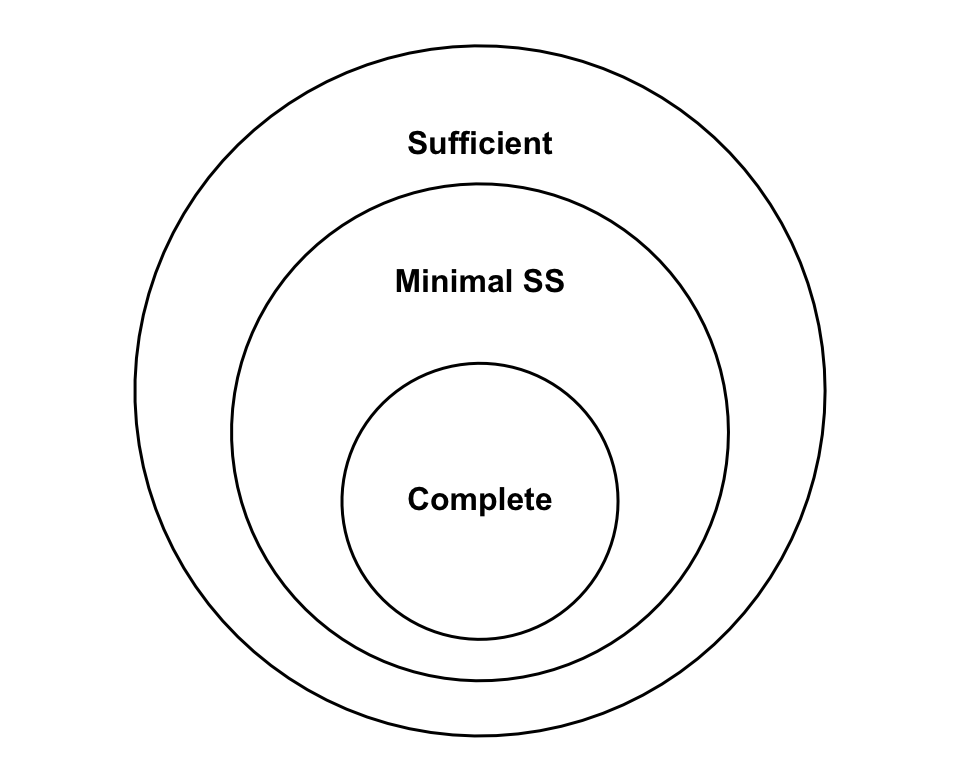

7 Minimum Variance Estimators
7.1 Completeness
Definition 7.1 (Complete Statistic) A statistic \(T\) is said to be complete if for any real-valued function \(g\), \[E[g(T)|\theta] = 0 \quad \text{for all } \theta\] implies \[P(g(T) = 0 | \theta) = 1 \quad \text{for all } \theta\]
Significance: If \(T\) is complete, then there exists at most one unbiased estimator for \(\theta\) that is a function of \(T\).
Example 7.1 (Uniform Distribution (Not Complete)) Let \(X_1, \dots, X_n \sim \text{Unif}(\theta-1, \theta+1)\). The statistic \(T(X) = (X_{(1)}, X_{(n)})\) is a Minimal Sufficient Statistic. However, it is not complete.
Consider the range \(R = X_{(n)} - X_{(1)}\). The distribution of \(R\) does not depend on \(\theta\) (it is an ancillary statistic). Let \(g(T) = X_{(n)} - X_{(1)} - c\), where \(c = E[X_{(n)} - X_{(1)}]\). Then \(E[g(T)] = 0\) for all \(\theta\), but \(g(T)\) is not identically zero.
Lemma 7.1 (Exponential Family Completeness) If \(T = (T_1, \dots, T_k)\) is the natural statistic of an exponential family that contains an open rectangle in the parameter space, then \(T\) is complete.
Proof. Proof of Lemma Lemma 7.1:
Consider a \(k\)-parameter exponential family in canonical form with density: \[f(y|\boldsymbol{\eta}) = h(y) \exp\left( \sum_{j=1}^k \eta_j T_j(y) - A(\boldsymbol{\eta}) \right)\] where \(\boldsymbol{\eta}\) belongs to a natural parameter space \(\Xi\) that contains a \(k\)-dimensional open rectangle.
Let \(g(T)\) be a function such that \(E_{\boldsymbol{\eta}}[g(T)] = 0\) for all \(\boldsymbol{\eta} \in \Xi\). The expectation is defined as: \[\int g(t) h(t) \exp\left( \sum_{j=1}^k \eta_j t_j - A(\boldsymbol{\eta}) \right) dt = 0\]
Since \(\exp(-A(\boldsymbol{\eta}))\) is a strictly positive constant with respect to \(t\), we can divide it out: \[\int g(t) h(t) \exp\left( \sum_{j=1}^k \eta_j t_j \right) dt = 0\]
We can decompose \(g(t)\) into its positive and negative parts, \(g(t) = g^+(t) - g^-(t)\). Substituting this in gives: \[\int g^+(t) h(t) e^{\sum \eta_j t_j} dt = \int g^-(t) h(t) e^{\sum \eta_j t_j} dt\]
These integrals represent the multivariate Laplace transforms of the measures \(m^+(t) = g^+(t)h(t)\) and \(m^-(t) = g^-(t)h(t)\). A fundamental property of Laplace transforms is that if two transforms are equal over an open set (in this case, the open rectangle in \(\Xi\)), then the underlying measures must be identical almost everywhere.
Therefore, \(g^+(t)h(t) = g^-(t)h(t)\), which implies \(g(t) = 0\) almost everywhere with respect to the distribution of \(T\). Thus, \(T\) is complete.
7.2 UMVUE
Definition 7.2 (Uniformly Minimum Variance Unbiased Estimator (UMVUE)) A statistic \(T(x)\) is a UMVUE for \(\theta\) if: 1. \(E(T(x)|\theta) = \theta\) for all \(\theta\) (Unbiased). 2. \(Var(T(x)|\theta) \le Var(d(x)|\theta)\) for all \(\theta\) and for all other unbiased estimators \(d(x)\).
The relationship between statistics types is visualized by Figure 7.1:
7.3 Fundamental Theorems and Proofs
7.3.1 Rao-Blackwell Theorem
The Rao-Blackwell theorem provides a mechanism for improving an estimator by utilizing a sufficient statistic.
Theorem 7.1 (Rao-Blackwell Theorem) Given that \(T\) is a sufficient statistic and \(d_1(x)\) is an unbiased estimator (\(E[d_1(x)] = \theta\)). Define \(g(T) = E[d_1(x) | T]\). Then: 1. \(g(T)\) is a statistic (independent of \(\theta\)). 2. \(E[g(T)] = \theta\) (Unbiased). 3. \(Var(g(T)) \le Var(d_1(x))\).
Proof.
- Statistic Property: By the definition of sufficiency, the conditional distribution of \(X\) given \(T\) does not depend on \(\theta\). Thus, \(g(T) = E[d_1(x)|T]\) does not involve \(\theta\) and is a valid statistic.
- Unbiasedness: By the Law of Iterated Expectations: \[E[g(T)] = E_T[ E_X(d_1(X)|T) ] = E_X[d_1(X)] = \theta\]
- Variance Reduction: Using the Law of Total Variance: \[Var(d_1(X)) = Var(E[d_1(X)|T]) + E[Var(d_1(X)|T)] = Var(g(T)) + E[Var(d_1(X)|T)]\] Since \(Var(d_1(X)|T) \ge 0\), it follows that \(E[Var(d_1(X)|T)] \ge 0\). Therefore, \(Var(g(T)) \le Var(d_1(X))\). Equality holds only if \(d_1(X) = g(T)\) almost surely.
7.3.2 Lehmann-Scheffé Theorem
While Rao-Blackwell improves an estimator, Lehmann-Scheffé ensures that we have found the best one.
Theorem 7.2 (Lehmann-Scheffé Theorem) If \(T\) is a complete and sufficient statistic, and there is an unbiased estimator \(d(X)\) such that \(E[d(X)] = \theta\), then \(\phi(T) = E[d(X)|T]\) is the unique UMVUE for \(\theta\).
Proof.
- Existence: From Rao-Blackwell, \(\phi(T)\) is an unbiased estimator with variance at most that of any \(d(X)\).
- Uniqueness: Suppose there exists another unbiased estimator \(\psi(T)\) that is also a function of the same complete sufficient statistic \(T\). Then: \[E[\phi(T) - \psi(T) | \theta] = E[\phi(T)|\theta] - E[\psi(T)|\theta] = \theta - \theta = 0\] By the property of completeness for \(T\), \(E[g(T)] = 0\) implies \(P(g(T)=0) = 1\). Thus, \(\phi(T) = \psi(T)\) almost surely. This proves that \(\phi(T)\) is the unique unbiased estimator based on \(T\), and therefore the unique UMVUE.
7.4 Connection to Likelihood Theory
In the previous chapters, we defined the Score function \(U(\theta) = \frac{\partial}{\partial \theta} \ell(\theta)\). By the Fisher-Neyman Factorization Theorem, if \(T\) is sufficient, then \(U(\theta)\) is a function of \(T\): \[\ell(\theta) = \log h(x) + \log g(T(x), \theta) \implies U(\theta) = \frac{\partial}{\partial \theta} \log g(T(x), \theta)\] This confirms that the curvature and gradients of the log-likelihood are entirely contained within the sufficient statistic \(T\), explaining why the UMVUE must be a function of \(T\).
7.5 Methods for Finding UMVUE
To find the UMVUE for a parameter \(\theta\):
- Find a Complete Sufficient Statistic: Identify \(T\) (usually via Exponential Family natural statistics).
- Find an Unbiased Estimator: Find any simple \(d(X)\) such that \(E[d(X)] = \theta\).
- Rao-Blackwellize: Compute \(g(T) = E[d(X)|T]\).
Example 7.2 (Poisson UMVUE for \(\lambda^2\)) Let \(X_1, \dots, X_n \sim \text{Poisson}(\lambda)\). \(T = \sum X_i\) is complete sufficient. \(E[X_1^2 - X_1] = E[X_1^2] - E[X_1] = (\lambda^2 + \lambda) - \lambda = \lambda^2\). So \(d(X) = X_1^2 - X_1\) is unbiased. The UMVUE is \(g(T) = E[X_1(X_1-1) | T]\). Using the moments of \(X_1|T \sim \text{Bin}(T, 1/n)\): \[g(T) = \frac{T(T-1)}{n^2}\]